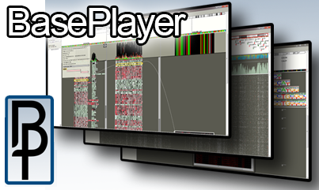
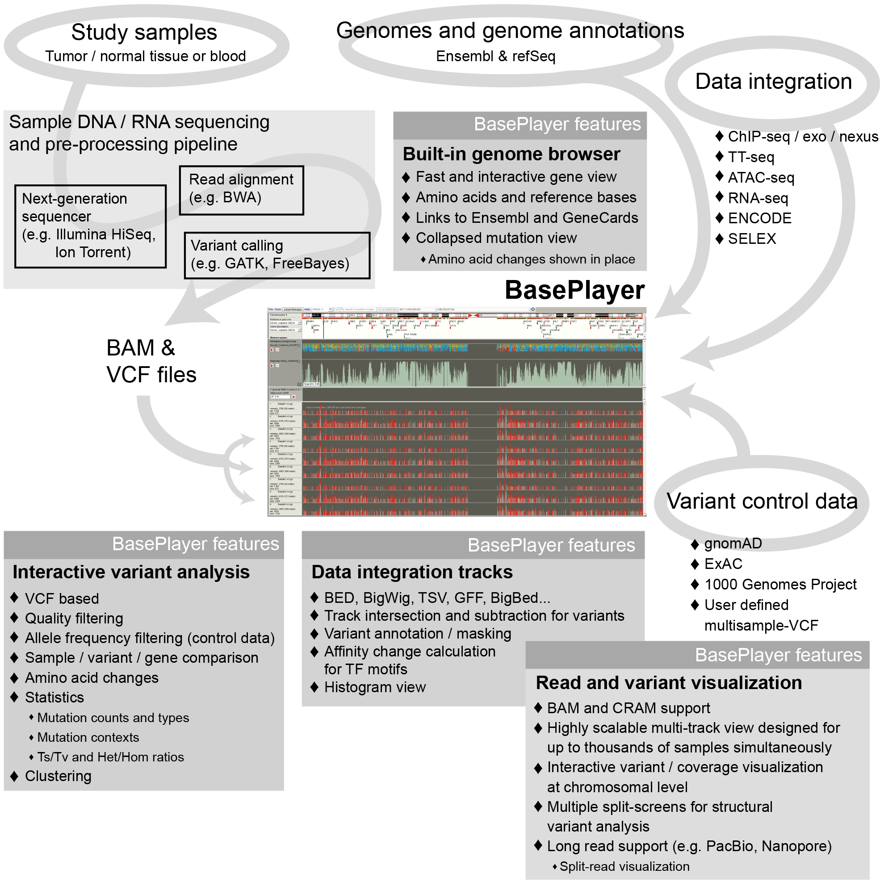

Introduction
BasePlayer enables tightly integrated comparative variant analysis and visualization of thousands of next generation sequencing (NGS) data samples and millions of variants. BasePlayer is a highly efficient and user-friendly software for biological discovery in large-scale NGS data. It transforms an ordinary desktop computer into a large-scale genomic research platform, enabling also a non-technical user to perform complex comparative variant analyses, population frequency filtering and genome level annotations under intuitive, scalable and highly-responsive user interface to facilitate everyday genetic research as well as the search of novel discoveries.

Cite us
You can cite us temporarily with the BioRxiv reference:
(Katainen et al., 2017) BasePlayer: Versatile Analysis Software For Large-Scale Genomic Variant Discovery. BioRxiv.
DOI: 10.1101/126482
Contact us: help(at)baseplayer.fi